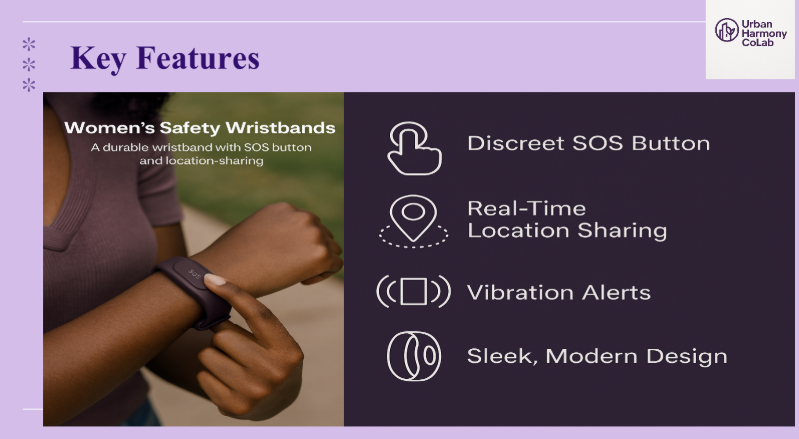
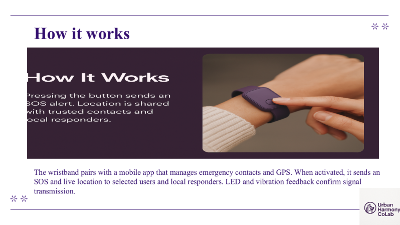

The Context & Problem
Urban environments present unique security challenges, particularly regarding the lack of safe, real-time emergency communication for vulnerable demographics. Traditional mobile devices can be cumbersome to access or easily confiscated during distress situations, highlighting a critical gap in personal safety infrastructure.
The Solution
To address this, I engineered the underlying data architecture and technical strategy for a high-impact safety wristband prototype. The system is designed to provide discreet SOS alerts, process real-time safety inputs (such as live GPS tracking), and ensure secure data transmission to local responders without relying entirely on direct smartphone interaction.
Technical Architecture & Security
- Robust Data Pipelines: Designed the data flow to actively ingest raw telemetry and location data from the wearable hardware, structuring it for immediate, reliable retrieval during high-stress scenarios.
- Security-First Methodology: Applied strict cryptographic and privacy standards to the system design. Data validation and access controls were implemented to ensure highly vulnerable user data is locked down and secure by design.
- Scalable Processing: Built the backend logic to handle concurrent connections and process incoming emergency signals with minimal latency.
Prototype Architecture
Below is a demonstration of the hardware prototype's internal component layering, designed to house the sensors and Bluetooth modules required for real-time SOS data transmission.

